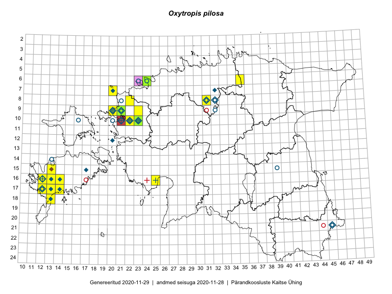

Oxytropis pilosa
Uuendatud: 2016-12-01
Kaardile koondatud taksonid: Oxytropis pilosa (L.) DC.

Kaart põhineb 21 kirjel.
Kuvatud viited 20 esimesele andmebaasikirjele, ülejäänud PlutoFis
- Sirje Azarov, Aira Alasi: 2015-05-01: 16-14: ala
- Sirje Azarov, Aira Alasi: 2015-05-01: 16-14: GPS punkt
- Mari Reitalu: 2015-09-04: 16-12: ala
- Mari Reitalu: 2015-09-04: 16-12: GPS punkt
- Mari Reitalu, Oliver Parrest: 2015-05-22: 16-13: ala
- Rein Kalamees, Kersti Püssa: 2005-07-28: 15-17: GPS punkt
- Mari Reitalu: 2014-07-21: 16-14: ala
- Mari Reitalu: 2014-07-21: 17-14: ala
- Mari Reitalu, Oliver Parrest: 2015-05-22: 16-13: GPS punkt
- Mari Reitalu: 2016-05-06: 16-12: GPS punkt
- Hanna-Eliisa Luts, Tõnu Ploompuu: 2015-07-16: 09-23: ala
- Sirje Lagle, Tõnu Ploompuu: 2015-05-15: 10-23: ala
- Maret Gerz, Aat Sarv: 2016-07-06: 10-23: GPS punkt
- Aat Sarv, Maret Gerz: 2016-07-06: 10-23: ala
- Mari Reitalu, Triin Reitalu, Sirje Azarov: 2016-07-10: 08-22: GPS punkt
- Mari Reitalu: 2016-06-09: 16-12: GPS punkt
- Peedu Saar, Toivo Sepp: 2016-07-18: 08-31: GPS punkt
- Peedu Saar, Toivo Sepp: 2016-07-18: 08-31: GPS punkt
- Ranno Puumets: 2015-07-14: 16-25: GPS punkt
- Ranno Puumets: 2015-09-08: 06-24: GPS punkt